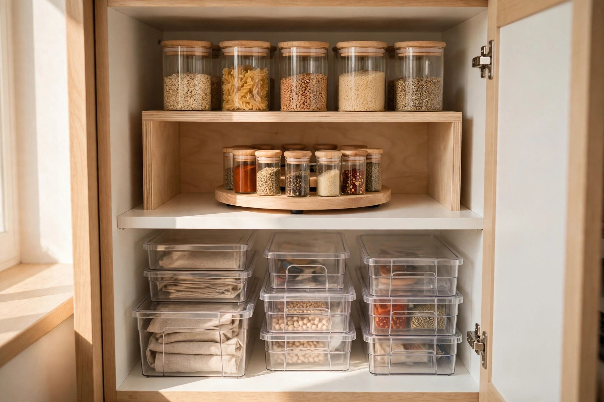

Small Kitchen
Small Kitchen Cabinet Organisation Ideas Under $40
Intro
Small kitchen cabinets are not small — they are just badly used. One tall shelf with a pile of plates on top and nothing underneath wastes half the space. The fix is cheap: give everything a level, a bin, or a hook of its own.
This guide has 12 cabinet organisation ideas, all under $40 in total. Each one lists what it costs and what it holds, and none of them needs drilling or permanent change. Most are renter-friendly.
The best part is that you do not need to do all twelve at once. Start with the shelf risers and the turntable — those two alone can double what a cabinet holds — and add the smaller fixes one by one over a weekend. By Monday, every cabinet will have a place for everything, and the kitchen will feel calmer every time you cook.

1. Shelf risers that double every shelf — $8–$15
A shelf riser is a small metal or bamboo stand that sits on a shelf and creates a second level. Plates go below, bowls go above — one shelf now holds twice as much. Two risers cost about $10 and change a cabinet completely.
2. A turntable for the corner cabinet — $8–$12
A lazy Susan turntable in a deep corner cabinet ends the reach-and-guess game. Spices, oils and sauces spin to the front with one turn. A 25 cm turntable fits most cabinets and costs less than a takeaway.
3. Hooks on the inside of the door — $3–$6
Stick-on hooks on the inside of a cabinet door hold measuring cups, lids, or a small spice rack. The door was empty space — now it works. Use strong adhesive hooks rated for 1 kg so nothing falls.
4. Dividers for baking trays and lids — $6–$10
A simple vertical divider rack stands baking trays, chopping boards and pot lids upright, like books on a shelf. No more crashing piles. One rack holds six items and costs about $8.
5. Stackable bins for dry food — $8–$12
Clear stackable bins keep pasta, rice and flour visible and tidy. Label each bin so everyone in the flat puts things back in the right place. Square bins waste less space than round ones.
6. A pull-out basket for under the sink — $10–$15
The space under the sink is awkward, but a small pull-out basket on rails makes it usable for cleaning supplies. Measure the width first — most cabinets fit a 30 cm basket. It keeps bottles upright and easy to reach.
7. Clear jars for the top shelf — $5–$10
Move dry goods into matching clear jars on the top shelf. You can see what is running low without opening anything, and matching jars look calm instead of cluttered. Buy jars in one size so they stack neatly.
8. A tension rod for spray bottles — $3–$5
A spring tension rod wedged across the cabinet under the sink holds spray bottles by their triggers, hanging upside down. It costs a few dollars, takes two minutes to fit, and frees the whole base of the cabinet.
9. Under-shelf baskets that clip on — $5–$8
Wire baskets that clip onto a shelf use the empty air below it — perfect for cling film, foil, and sandwich bags. Two baskets cost about $7 and hold everything that usually ends up in a messy drawer.
10. A door rack for spices — $8–$12
A narrow rack fixed to the inside of a pantry door holds a dozen spice jars in plain sight. Cooking gets faster when you can see every spice at once. Check the door closes flat before you buy — some racks are too deep.
11. Labels on every bin and jar — $2–$4
Labels sound boring, but they are the cheapest organisation tool there is. A label maker or a pack of chalk labels costs a few dollars, and labelled bins stay tidy because everyone knows where things belong.
12. One empty shelf, on purpose — $0
Leave one small shelf or one corner of a cabinet empty. It is the landing spot for the new bag of rice, the borrowed blender, the extra plates when guests come. A cabinet with no spare space is a cabinet that gets messy again in a week.
Conclusion
Cabinet organisation is not about buying more storage — it is about using the space you already have. Risers, turntables and door hooks cost less than $40 together, and they can double what a small cabinet holds. Start with the shelf risers, add a turntable, and the kitchen will feel like it grew.
Budget recap
- Two shelf risers: ~$12
- Turntable: ~$10
- Divider rack: ~$8
- Door hooks + labels: ~$7
Total for a fully organised cabinet: ~$37 — under the $40 budget.
Pinterest pin titles (3 fresh pins, same article, different designs)
- "Small Kitchen Cabinet Organisation Ideas Under $40"
- "12 Cabinet Ideas That Double Your Kitchen Storage — Under $40"
- "Small Kitchen Cabinets? Risers, Turntables and $37 of Fixes"